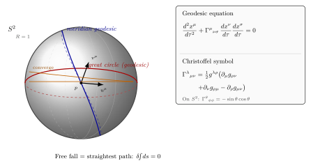

自由下落的轨迹怎么算?
把一个苹果从树上松开, 它沿着一条曲线落到地面. 牛顿说这是因为有一种叫"重力"的力把它拉下来. Einstein 1907 年在专利局想到了不一样的答案: 自由下落的苹果 没有受任何力, 它只是沿着弯曲时空里"最直"的路走 — 像一条划过弯曲玻璃的直线. 这听起来像玩文字游戏, 直到我们把"最直"翻译成可以算的方程. 这就是这一节要做的事.
具体的目标: 给定度规 $g_{\mu\nu}(x)$, 写下任何自由质点 (有质量的或光的) 满足的运动方程. 这条方程在球面上给出大圆, 在 Minkowski 时空里给出直线, 在 Schwarzschild 时空里给出 Mercury 的进动轨道, 在 FLRW 宇宙里给出星系退行的红移. 一条方程, 五个例子, 全是同一条几何原理.
一、变分原理: 最短/最长曲线
先看一个我们熟悉的几何问题: 二维平面上, 连接两点 $A$, $B$ 的最短曲线是直线. 怎么用微积分写这件事? 一条曲线 $x(\lambda) = (x^1(\lambda), x^2(\lambda))$, $\lambda$ 是参数, 它的长度是
$$ L = \int_A^B ds = \int_A^B \sqrt{\delta_{ij}\,\dot{x}^i \dot{x}^j}\,d\lambda, \qquad \dot{x}^i \equiv \frac{dx^i}{d\lambda}. $$
"最短"意味着对路径做小变分 $x \to x + \delta x$, 长度 $L$ 的一阶变化为零: $\delta L = 0$. 这是标准的变分法 (Euler-Lagrange) 题目, 解出来就是 $\ddot{x}^i = 0$ — 直线.
把这个想法搬到弯曲时空, 唯一要换的是 $\delta_{ij} \to g_{\mu\nu}(x)$. 弧长泛函变成
$$ S[\,x(\tau)\,] = \int \sqrt{-g_{\mu\nu}(x)\,\dot{x}^\mu \dot{x}^\nu}\,d\tau \tag{1}$$
(度规号差 $(-,+,+,+)$ 时, 类时世界线对应 $g_{\mu\nu}\dot{x}^\mu\dot{x}^\nu \lt 0$, 所以前面带个负号开根, 取的就是固有时 $\tau$.) 我们要求
$$ \delta S = 0. $$
把这个变分推到底, 得到的就是测地线方程 — 我们马上就写出来. 关键点已经摆好: 引力下的运动 = 时空里的最直曲线, 而"最直"的判据就是 $\delta S = 0$.
这个想法不是 Einstein 凭空发明的. Lagrange 在 1788 年的 Mécanique Analytique 已经把整个牛顿力学翻成 $\delta\!\!\int L\,dt = 0$. 之后 Hamilton, Jacobi, Maupertuis 一脉传下来. Einstein 做的事是: 把 Lagrange 力学换成几何 — 那个被极小化的, 不是某个"作用量函数", 而是路径本身的长度. 一旦你接受这件事, 引力就再也不需要"力"了; 引力变成了"度规告诉你哪条路最直".
这里要警惕一个常见的反直觉. 类时世界线下, $\delta\!\!\int d\tau$ 实际上是极大化固有时, 不是极小化 — Lorentz 度规的负号让"最直"变成"用时最长". 这就是著名的"双子佯谬": 留在地球上的孪生子沿着测地线 (惯性运动), 他经历的固有时是最大的; 而坐火箭去远星再回来的孪生子, 因为有加速段不在测地线上, 经历的固有时反而少. 同一条原理, 时空号差让结论翻了个面. 在球面这种 Riemann 流形里, 测地线确实就是局部最短.
二、测地线方程与 Christoffel 符号
把变分推下去 (这里跳过中间一步代数, 任何 GR 教材都做这个推导), 得到的方程是
$$ \frac{d^2 x^\mu}{d\tau^2} + \Gamma^{\mu}{}_{\nu\sigma}\,\frac{dx^\nu}{d\tau}\,\frac{dx^\sigma}{d\tau} = 0. \tag{2}$$
这就是 测地线方程 (geodesic equation). $\tau$ 是仿射参数 (有质量粒子取固有时, 光子取任何仿射参数都行). 加号那一项是新东西: $\Gamma^\mu{}_{\nu\sigma}$ 叫 Christoffel 符号, 由度规及其一阶导给出
$$ \Gamma^{\lambda}{}_{\mu\nu} = \tfrac{1}{2}\, g^{\lambda\rho}\bigl(\partial_\mu g_{\rho\nu} + \partial_\nu g_{\rho\mu} - \partial_\rho g_{\mu\nu}\bigr). \tag{3}$$
三件事先说清楚. 第一, 当度规是常数 (例如 Minkowski 时空 $g_{\mu\nu} = \eta_{\mu\nu}$, 偏导全为零) 时, $\Gamma=0$, 方程退化为 $\ddot{x}^\mu = 0$ — Newton 第一定律, 直线. 弯曲时空里 $\Gamma$ 不为零, 它就是"几何的拽劲", 把直线拐成曲线. 引力 = $\Gamma$.
第二, $\Gamma$ 不是一个张量. 它的指标看起来像张量, 但是在坐标变换下多出一项, 因为它本身是从坐标的二阶导里冒出来的. 所以两个观察者看到的 $\Gamma$ 不一样. 这正对应"等效原理": 自由下落的人在自己的局域坐标里看 $\Gamma=0$, 而站在地面上的人看 $\Gamma\neq 0$ (这就是他感到的引力).
第三, $\Gamma$ 在下面两个指标上是对称的: $\Gamma^\lambda{}_{\mu\nu} = \Gamma^\lambda{}_{\nu\mu}$ (这从 (3) 直接看得出来, 也是 Levi-Civita 联络的定义). 4 维时空里这就有 $4 \times 10 = 40$ 个独立分量.
$\Gamma$ 的物理含义可以这么读: 第二项 $\Gamma^\mu{}_{\nu\sigma}\dot{x}^\nu\dot{x}^\sigma$ 在量纲上是加速度. 也就是说, 在当前坐标里看到的加速度等于负的 $\Gamma$ 与速度二次形式的乘积. 弯曲时空里没有任何外力, 但你在某个坐标下却看到一个"假加速度" — 那就是 $\Gamma$. Einstein 把这个"假加速度"等同于通常说的引力. 这就是等效原理的精确数学语句: 引力是坐标的 Christoffel, 在自由下落坐标里它消失.
历史一笔: Christoffel 符号是 Bruno Christoffel 1869 年研究"度规怎么变换才能保形"时引入的, 比 GR 早 46 年. 1917 年 Levi-Civita 把它解释成 "无穷小平行运输" 的方向修正 — 这就是下一节我们要展开的协变导数. Einstein 1915 年写下场方程时, 他正是用 Christoffel 把"自由下落"翻译成几何; 没有 (3) 这一步, 整个 GR 就没有运动方程. Einstein 在自传里写道, 学 Ricci-Levi-Civita 的张量分析比理解物理本身还要痛苦, 但一旦学会, 所有公式都"自动"对了.
三、具体计算: 球面 $S^2$ 上的大圆
讲完理论, 算一个例子. 拿单位球面 $S^2$ ($R=1$), 用极角 $\theta$ (从北极算起) 与方位角 $\phi$ 作坐标. 度规是 $ds^2 = d\theta^2 + \sin^2\!\theta\,d\phi^2$, 矩阵形式:
$$ g_{\mu\nu} = \begin{pmatrix} 1 & 0 \\ 0 & \sin^2\!\theta \end{pmatrix}, \qquad g^{\mu\nu} = \begin{pmatrix} 1 & 0 \\ 0 & 1/\sin^2\!\theta \end{pmatrix}. $$
用 (3) 算 Christoffel. 度规对 $\theta$ 的偏导为 $\partial_\theta g_{\phi\phi} = 2\sin\theta\cos\theta$, 别的偏导都为零. 所以非零的分量只有两个:
$$ \Gamma^{\theta}{}_{\phi\phi} = \tfrac{1}{2}\, g^{\theta\theta}\bigl(-\partial_\theta g_{\phi\phi}\bigr) = -\sin\theta\cos\theta, $$
$$ \Gamma^{\phi}{}_{\theta\phi} = \Gamma^{\phi}{}_{\phi\theta} = \tfrac{1}{2}\, g^{\phi\phi}\,\partial_\theta g_{\phi\phi} = \frac{\cos\theta}{\sin\theta} = \cot\theta. $$
检查一下数字感: 在赤道 $\theta = \pi/2$ 时, $\sin\theta=1, \cos\theta=0$, 所以 $\Gamma^\theta{}_{\phi\phi}=0$, $\Gamma^\phi{}_{\theta\phi}=0$. 在 $\theta=\pi/4$ 时, $\Gamma^\theta{}_{\phi\phi} = -\sin(\pi/4)\cos(\pi/4) = -1/2$. 在北极附近 $\theta \to 0$ 时, $\Gamma^\phi{}_{\theta\phi}=\cot\theta \to +\infty$ — 这是坐标奇点, 不是几何奇点 (球面在北极一切正常, 只是 $(\theta, \phi)$ 这个坐标卡在那里失去了意义).
现在把这些代回 (2). 设我们沿赤道转, 即 $\theta(\tau)=\pi/2$ (常数), $\phi(\tau)$ 待定. $\theta$ 方程:
$$ \ddot{\theta} + \Gamma^\theta{}_{\phi\phi}\,\dot{\phi}^2 = 0 + (-\sin\theta\cos\theta)\big|_{\theta=\pi/2}\dot{\phi}^2 = 0. $$
恒成立, $\theta=\pi/2$ 是允许的. $\phi$ 方程:
$$ \ddot{\phi} + 2\Gamma^\phi{}_{\theta\phi}\,\dot{\theta}\dot{\phi} = \ddot{\phi} + 2\cot\theta \cdot 0 \cdot \dot{\phi} = \ddot{\phi} = 0. $$
所以 $\phi(\tau) = \phi_0 + \omega\tau$ — 匀速绕赤道! 这就是 赤道大圆是球面上的测地线 这一直观事实的方程式版本. 而且按对称性, 把球面的"赤道"换成任何一个过球心的平面截球面所得的圆 (大圆), 都是测地线 — 这正对应飞机航线为什么走"看上去弯弯"的曲线 (北京到纽约飞机不走两点连线在墨卡托投影上的直线, 而是绕到接近北极: 那条才是真正的最短路径, 球面上的大圆).
反过来, 一个 非大圆 — 例如某条恒纬度圈 (除了赤道之外, 比如 $\theta=\pi/4$) — 不是测地线. 设 $\theta=\pi/4$, 那 $\theta$ 方程要求 $0 + (-1/2)\dot{\phi}^2 = 0$, 这只有 $\dot{\phi}=0$ 时才成立 (静止). 所以不沿赤道的恒纬度圈, 一旦你在上面有非零角速度, 测地线方程就会把你"拉回"赤道方向. 这正是站在地球纬度 $45^\circ$ 上向正东扔一个球后, 它会朝赤道方向偏的原因 (前提是球面没摩擦).
这里值得多算一个数字. 在 $\theta=\pi/3$ (北纬 $30^\circ$) 上, $\sin\theta = \sqrt{3}/2$, $\cos\theta = 1/2$, 所以 $\Gamma^\theta{}_{\phi\phi} = -\sqrt{3}/4 \approx -0.433$. 设你以单位角速度 $\dot{\phi}=1$ 沿这条纬线走, 测地线方程 $\theta$ 分量给出 $\ddot{\theta} = +\sqrt{3}/4 \approx 0.433$ — 这是一个朝向南方 ($\theta$ 增大方向) 的"加速度". 物理上, 这就是: 一颗球沿地球北纬 $30^\circ$ 的纬线圈以适当角速度滚动, 它偏离纬线的初始加速度大约是 $0.433$ (无量纲, 因为 $R=1$). 把度规改成实际地球半径 $R = 6371$ km, 加速度乘 $R$, 就得到米/秒² 单位的物理加速度. 这种"非测地线就被拉离"的效应, 在地球大气环流、洋流、Foucault 摆里都看得见.
把球面上这套例子推广: 任何 Riemann 流形上的测地线都是把局域伸直了的"直线", 它们组成一族特殊曲线. 给定起点和起点处的切矢, 测地线方程 (2) 是一个二阶常微分方程, 解唯一 — 这就是几何里"两点之间一条最直路"的精确说法 (不要求它必须最短, 它只是局部驻点; 在球面上从北京到纽约的两条相反方向大圆都是测地线, 但只有较短的那条是最短).
四、从球面到时空: Schwarzschild 行星轨道
球面只是热身, 真正的目标是 4 维时空. Schwarzschild 度规 (下面第 12 节会详推) 描述球对称真空里时空的弯曲, 写成
$$ ds^2 = -\Bigl(1-\tfrac{r_s}{r}\Bigr)c^2 dt^2 + \Bigl(1-\tfrac{r_s}{r}\Bigr)^{-1}dr^2 + r^2 d\Omega^2, $$
其中 $r_s = 2GM/c^2$ 是 Schwarzschild 半径 (太阳的 $r_s \approx 2.95$ 公里). 把 (3) 代进来算 Christoffel, 再代进 (2), 就得到行星轨道方程. 在弱场 $r \gg r_s$, 球对称的极限下, 测地线方程 (2) 的径向分量退化为
$$ \ddot{r} \approx -\frac{GM}{r^2} + \text{(小修正项)}, $$
正是 Newton 万有引力定律. "小修正项" 是 GR 区别于 Newton 之处, 它在 Mercury 这一最靠近太阳的行星上累积成了著名的 43 角秒/世纪的近日点进动 (本卷第 26 节会算这个数字). 一句话: Newton 引力是测地线方程的弱场极限.
更极端的情形: 光子. 对光子 $ds^2=0$ (零测地线), 它们也满足 (2), 只是参数不能用 $\tau$ 而是某个仿射参数. Schwarzschild 中的零测地线给出光的偏折: 太阳边缘附近偏 $1.75$ 角秒, 这就是 Eddington 1919 年日食观测验证的数值. 行星和光走的是 同一条 几何方程, 只是初值条件不同 ($ds^2$ 类时还是类零).
把视野再放大: FLRW 宇宙里的星系沿着宇宙学测地线退行, 导致 Hubble 红移; Kerr 黑洞外的粒子沿着旋转时空的测地线被"拖"; LIGO 测到的引力波本身就是相邻测地线之间距离的振动 (下下节讲 Riemann 张量时回到这里). 测地线方程 (2) 是整个 GR 物理预言的入口 — 给我度规, 我给你运动. 所有的 "Einstein 场方程" 后续工作, 都只是为了告诉你度规是什么; 一旦度规知道了, 万物运动尽在 (2) 里.
最后留一个直觉钩子, 接到下一节. 我们说测地线是"最直的曲线", 但"直"在弯曲流形上到底是什么意思? 在欧氏平面上, 直线就是切矢方向不变的曲线; 在球面上, 切矢沿曲线移动时没法"绝对地"保持方向 — 任何曲线上的切矢总是会绕着曲面转. 关键判据是: 相对于曲面, 切矢沿自己方向延伸时不旋转. 把这件事翻译成方程, 就是协变导数 $\nabla_\mu$ 让切矢量沿曲线"平行运输"; 测地线就是那种"自己沿自己平行运输自己"的曲线, 即 $u^\nu\nabla_\nu u^\mu = 0$. 这正是 (2) 的几何解读. 下一节我们就把 $\nabla_\mu$ 和平行运输的概念正式立起来, 然后球面、Schwarzschild、宇宙学的"曲率"才有标准的张量描述.

小结
这一节把"自由下落"翻成可算的方程. 出发点: $\delta\!\!\int ds = 0$. 终点: 测地线方程 (2) 配上 Christoffel 符号 (3). 在球面上, 我们算出 $\Gamma^\theta{}_{\phi\phi}=-\sin\theta\cos\theta$, $\Gamma^\phi{}_{\theta\phi}=\cot\theta$, 并验证赤道大圆 $\theta=\pi/2$ 满足测地线方程. 这是整个 GR 运动学的引擎: 之后第 12 节的 Schwarzschild 黑洞、第 21 节的 FLRW 宇宙、第 26 节的 Mercury 进动、第 28 节的 LIGO 引力波, 都是把对应度规代进 (2) 后的结果. 但 $\Gamma$ 还有一桩遗留: 它不是张量. 这件事意味着"导数"在弯曲时空里需要被重新定义 — 这是下一节协变导数 $\nabla_\mu$ 与平行运输要回答的问题.
▲